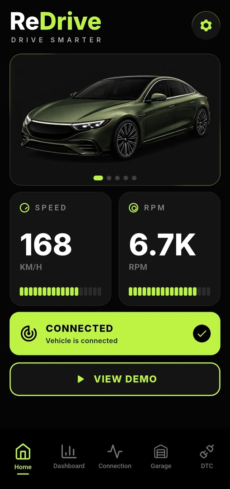
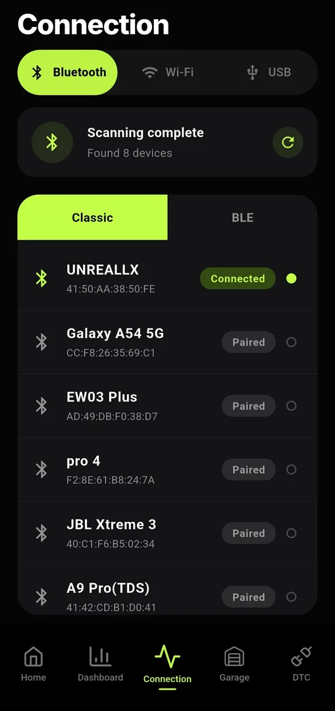

Live Data
Скорость, обороты двигателя, температура охлаждающей жидкости и напряжение адаптера/бортовой сети.
Flutter · Dart · OBD2 · ELM327
ReDrive превращает смартфон в чистый OBD2-дэшборд: скорость, RPM, температура, напряжение, подключение к адаптеру и база для диагностики без рекламы и пейволлов.


Задача ReDrive простая: дать водителю данные из ECU в понятном виде, а разработчику — чистую базу для расширения OBD2-функций.
Что уже есть
Скорость, обороты двигателя, температура охлаждающей жидкости и напряжение адаптера/бортовой сети.
Инициализация ATZ, ATE0, ATL0, ATSP0 и polling базовых PID через OBD-соединение.
Поиск устройств, подключение, отмена, защита от race conditions и фоновое переподключение.
Тестовые данные без машины — удобно для UI, отладки и будущих contributor-friendly сценариев.
UI/UX
Интерфейс ориентирован на быстрый взгляд в машине: крупная телеметрия, явные состояния подключения, нижняя навигация и акцентный цвет.
Архитектура
Сейчас проект уже разделён на providers, services, models, screens и reusable widgets. Следующий большой шаг — вынести OBD/ELM-логику из provider в отдельные сервисы.
core/тема, цветаmodels/OBD data, deviceproviders/Bluetooth, OBD stateservices/connection abstractionsscreens/Home, Connection, Garagewidget/карточки, bottom bar, баннерыRoadmap
Flutter-структура, тёмный UI, карточки телеметрии, Bluetooth, demo mode, reconnect banner, базовый ELM327 polling.
ElmClient, ElmCommandQueue, PID registry/decoder, error types, тесты парсинга и очереди команд.
TCP transport для Wi‑Fi адаптеров, переключатель Bluetooth/Wi‑Fi/USB, крупные gauge-режимы и выбор датчиков.
Чтение/очистка ошибок, freeze frame, профили автомобилей, история ошибок и настройки dashboard под машину.
Безопасные ReDrive Packs, raw logs, OBD replay, adapter benchmark и community registry через GitHub.
Для контрибьюторов
OBD core, Wi‑Fi transport, DTC decoder, Garage, настройки, оптимизация UI rebuilds.
PID-формулы, ELM327 ответы, reconnect, таймауты, mock TCP loss, parsing Mode 03/07/0A.
ReDrive Packs, contributor guide, sample logs без персональных данных, UX-гайды для dashboard.
git clone https://github.com/iUnreallx/ReDrive.git
cd ReDrive
flutter pub get
flutter run